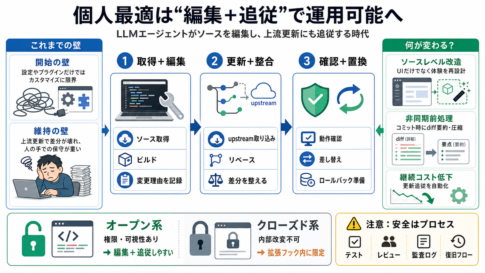

開始の壁
設定ファイルや拡張APIの“出口”の範囲に制限され、根本的な作り替えができない。

エージェントで変わる
LLMエージェントが「ソースコードを編集し、upstream更新まで追従」できるようになり、個人最適のパーソナライズが運用可能になってきた。
従来の“設定やプラグインで折り合い”から、ソースレベルで体験を作り直す方向へ。
なぜ個人最適は続かなかった？
過去は個人向けに合わせるのが難しく、手を入れた後もメンテ負担が大きかったため、汎用ツール＋設定／拡張で妥協するのが定石だった。
設定ファイルや拡張APIの“出口”の範囲に制限され、根本的な作り替えができない。
上流が更新されると差分が崩れ、結局人間が追いかけて修正し続ける必要が出る。
“編集するだけ”では足りない
草を刈る（編集）だけでなく、季節の変化（upstream更新）に合わせて植え替える（追従）必要がある。エージェントはこの“両方”を自動化しうる。
望む機能やUIを、ソースコードから作り替える。
上流取り込み→リベース→動作確認して置き換える。
2種類の指示が鍵
エージェントに入れるべき指示は大きく2つで、(1)変更を作って記録し、(2)更新を取り込んで差分を整合させる。
ローカル取得→ビルド→必要変更→理由をバージョン管理へ記録。
上流更新→ローカル変更をリベース→動作確認→置き換え。
meat.devの統合例
Shelley（オープンソースのエージェント）にmeat.devを統合し、差分（diff）をLLMで要約・圧縮して“読む価値が薄い部分”を除く。
diffを要約・圧縮して本質に集中。
コミット生成の瞬間にバックグラウンド処理。
ユーザーが待たずにレビューできる。
“非同期前処理”の再現
meatを単に手動実行するのではなく、コミット作成時点で処理しておくことで、従来は不可能に近かった“体験の非同期化”が成立する。
設定／拡張APIの範囲では“いつ処理するか”を根本から設計しにくい。
ソースレベル編集でオペレーションの順序そのものを組み替えられる。
オープン/クローズドで分岐
オープンソースはエージェントがソースにアクセスし編集できるためパーソナライズが進む。一方クローズド環境は内部を書き換えられず、拡張フックの範囲に留まる。
Shelley / Codex / Pi など（例示）
→ ソース編集＋更新追従が組み込みやすい。
Claude Code（例示）
→ “改変不能”で、調整可能範囲が限定。
肝となる4つ
運用フロー（要点）
パーソナライズを長期で成立させるには、(1)差分の理由付けと記録、(2)リベースと動作確認、(3)置き換えがセットになる。
ソース取得→ビルド→変更→理由をVCSへ。
upstream取り込み→リベース。
動作確認→差し替え。
注意点：安全性は自動ではない
記事はレビューを前提とするが、モデル主導の変更は品質が揺らぎうる。必要なテスト・権限・ロールバック設計が不足している点は注意。
エッジケースや設計観点で偏りが出る可能性。
誤ったリベースや意図しない変更混入でリグレッションが起こりうる。
結論：運用可能な転換点
“オープンなエージェント＋ソース可視性＋自動追従”が揃うことで、個人最適が単なる理想から「運用可能な工学」へ移る。
安全性・テスト・監査・ロールバックなどの運用設計が補足されないまま万能視すると危険。
登場要素の整理
本稿の内容を押さえるための、主要な用語・具体例を短く並べる。
LLMエージェント / diff要約 / diff圧縮 / ビルド / リベース / 動作確認
Shelley / meat.dev / Codex / Pi / Claude Code
No references found